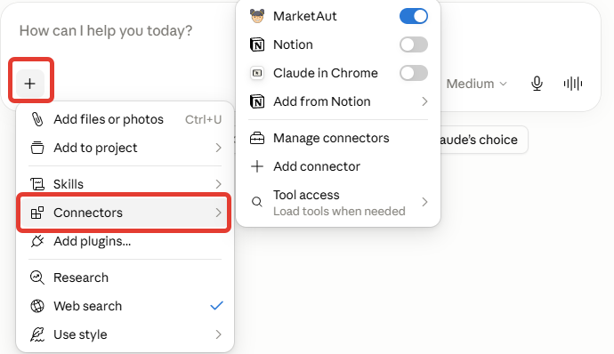
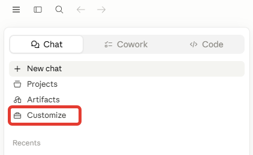
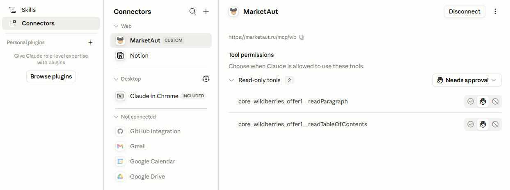
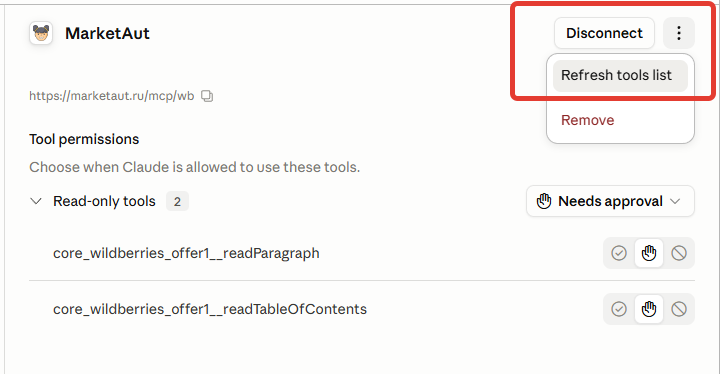
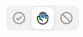

Работа с Claude
Проверка подключения
В любом диалоге с Claude нажмите на символ + под полем ввода сообщения и выберите Connectors.
Если подключение настроено корректно, в списке Connectors будет отображаться MarketAut (или другое имя, указанное при настройке подключения).

Обновление инструментов
После изменения списка доступных инструментов в веб-интерфейсе MarketAut необходимо обновить список инструментов в Claude.
Для этого перейдите в раздел Customize.

Далее откройте раздел Connectors.

Выберите нужный коннектор, нажмите на кнопку меню (⋯) в правом верхнем углу и выберите Refresh tools list.

Настройка доступа к инструментам
Для каждого инструмента можно настроить отдельную политику доступа.
Доступны следующие варианты:
1. Полный запрет.
2. Подтверждение перед каждым использованием.
3. Использование без подтверждения.
Для настройки перейдите в раздел Customize и выберите коннектор MarketAut.
В правой части окна отображается список инструментов. Для каждого инструмента можно выбрать один из режимов доступа:
